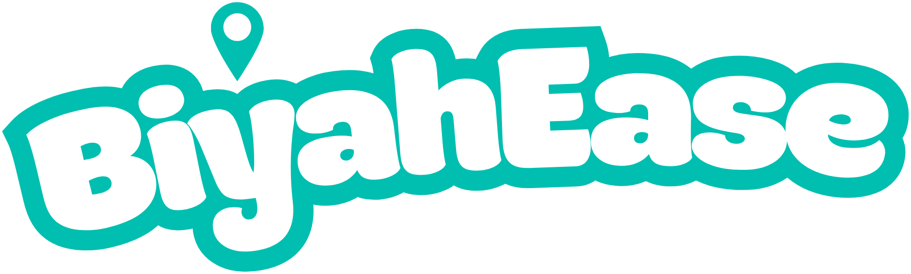

Landmark-based guidance
Directions built around buildings and signboards you'll actually recognize — not just street names.

Back to HomeOUR STORY
BiyahEase is a landmark-based commuter navigation app built to make unfamiliar public transport routes feel familiar. It pairs live GPS tracking with the buildings, signs, and corners you'll actually recognize on the street — plus fare estimates, transfer alerts, and a calmer way to get where you're going across Batangas.
Unfamiliar routes, unclear transfer points, and fares you can't predict make commuting stressful — especially for first-time or low-confidence riders. Conventional GPS apps help, but turn-by-turn directions and abstract map lines aren't always easy to match against what's actually in front of you on the street.
BiyahEase replaces guesswork with recognizable landmarks — the sari-sari store on the corner, the church, the mall entrance — layered on top of live GPS tracking and researcher-validated routes. The result is navigation that matches your eyes, not just your coordinates.
Directions built around buildings and signboards you'll actually recognize — not just street names.
Real-time location tracking and route visualization keep you oriented from boarding to arrival.
Know your fare before you ride, including the 20% discount for students, seniors, and PWDs.
A heads-up exactly when it's time to switch jeepneys, e-jeeps, or tricycles — no missed stops.
Chill, Hype, or Focus — Biya picks a mood-based soundtrack to keep you comfortable on the road.
Every route was walked, ridden, and checked by the team before it made it into the app.
BiyahEase currently guides commuters across five localities in Batangas Province, with 76 destinations and 372 validated routes spanning traditional jeepneys, e-jeeps, tricycles, and walking segments.
BSIT students at First Asia Institute of Technology and Humanities (FAITH Colleges), Tanauan City — guided by Ms. Angelica Evangelista, MIT and Dr. Maricel M. Gaspar.
Project Lead & Frontend Developer
UI/UX & Systems Developer
Visual Design & UI Styling
Discover destinations, follow landmarks, and travel with confidence — starting now.
Get BiyahEase